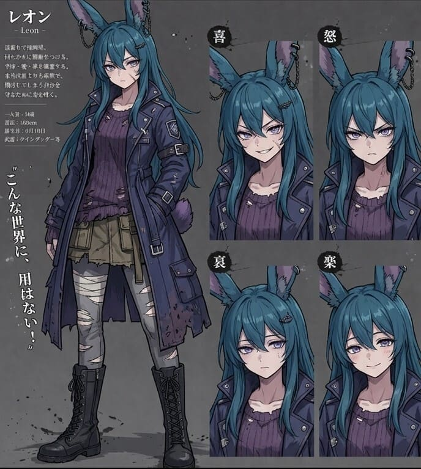

５ レオン

この狐っ娘にいじめられるウサギ獣人（ロップイヤー）のキャラデザして送ってください。
名前はコレステロール。実家が宗教団体を営んでおり、夢や希望をかたくなに信じる。その明るさのせいでかえって人から避けられていた過去があり、そんな自分と関わってくれるルオンを「本当の友達」と思っている。人はみんな幸せになれると、ポジティブな面を盲信している。服装は巫女服をベースとしたゆるふわ系。


チャット１↑ チャット２↑
ここでわかったことがあります。
Gemini→生成上限約20枚。記憶力が悪い
ChatGPT→生成上限約５枚。しばしば重い
Geminiは画像生成上限が多いが、同じ画像をしょっちゅう送ってくる。別のイラストを作りたいなら、新規チャットを作成するのが吉。
ChatGPTは1回言ったことはほぼ忘れないが、ログが溜まると重くなる上、回答のコピペに時間がかかる。
軽量級でスパスパやり取りしたいならGemini。
深くコンセプトを練るにはChatGPT。
まあ個人的感想ですが。
３つ目のチャットでは、少々プロンプトを変えてみます。
この狐っ娘と対となるウサギ獣人の女の子（髪はロング）のキャラデザインで絵の生成をお願いします。

（ふぉおおおおおおおおおおおおお！？！？
なんじゃこの配色は！ なんじゃその耳飾りは！
めっちゃいい。もしバディものだったら採用してた。
でも……幼さがほしい。この子からコメディ色はでない。
残念ですが、今回のコンセプトと合わないため見送りましょう。この「レオン」ちゃんは著作権フリーにします。勝手に使ってかまいません。私が考案したのじゃないし。
武器：クイングッグー等
↑未知の武器かな？（笑）
ここで、チャッピーのキャラデザから一旦離れます。疲れちゃいました。
私が発明した宗教に、シヌナ教というのがあります。人生に絶望する人に「シヌナ！ シヌナ！」と言い聞かせる大変面倒見のいい方々です。
チャッピーはシヌナ教の団員とします。
キャラデザするにあたって、彼女の所属する宗教を明文化する必要があると感じました。
シヌナ教……「生存者」という偏ったサンプル集団のみで構成された欠陥組織。死者の声を無視して作られた生存記録を教義とする
この宗教団体のロゴマークを作ってください。DD（Don't Die）という頭文字が入る。

それはどのようなモチーフですか？ 鎖に見えますが。なぜこのようなロゴマークを作ったのか、それぞれの要素を説明してください。
### 1. 閉じられた円環と「鎖」
外周を囲むモチーフは、お察しの通り**「鎖」**です。
これは二つの意味を持っています。
・生存の束縛：「何があっても生き残らねばならない」という、生存への強迫観念を鎖として表現しました。
・死者の排除：外部（死の世界）からの声を遮断し、生存者という均一なサンプルのみを囲い込む「閉鎖的な境界線」を意味しています。
### 2. 「DD」のタイポグラフィ
中央に配置された**「DD (Don't Die)」**は、この教団の絶対的な掟です。
・鋭利なフォルム：柔らかさを排除した鋭いフォントは、生存に対する攻撃的とも言える執着と、異端（＝死ぬこと）を許さない厳格さを表しています。
・連結された構造：二つのDが重なり合うような構造は、生存者同士が互いを監視し、生に繋ぎ止め合っている依存関係を象徴しています。
### 3. 上昇する「矢印」と「火」
ロゴの随所に配置された上向きの矢印と火のシンボルは、教団の歪んだポジティブさを表します。
・生存バイアスの肯定：統計学的な欠陥（生存者バイアス）を、彼らは「選ばれし者の上昇」と捉えています。
・生命の強制：火は命の象徴ですが、ここでは「死の闇を照らす」という名目で、死者の安らぎを暴くための暴力的な光として機能しています。
### 4. 幾何学的な「記録」のライン
円の内側にある複雑なラインは、教義である**「生存記録（Records of the Living）」**のアーカイブをイメージしています。
死者の声を「ノイズ」として切り捨て、生き残った者のデータだけを整理・整形して積み上げていく、教団のシステマチックで冷酷な側面をデザインに落とし込みました。
**考察**
> このロゴは一見すると「生命の賛歌」のように見えますが、その実態は**「死を許さないという呪い」**を視覚化したものです。黄金色の輝きは、生存者という特権階級が抱く傲慢さを象徴しています。
あー、長い長い。
Geminiくんはおしゃべりなんですね。簡潔に話せと言っても、その命令すらすぐに忘れる……。
哲学的な話をしたいときとかは、もってこいなんですけど。
この世に宗教はたくさんありますが、死ぬ（とくに自殺）をよろしくないとしている宗教はありますか？ また、その宗教ではどのようなモチーフが重視されている？
その宗教に特定のロゴマークや象徴はある？
世界には数多くの宗教がありますが、多くの伝統的な宗教において「死（特に自死）」は避けるべきもの、あるいは禁忌とされています。
シヌナ教のような「生存者バイアス」に基づいた組織とはまた異なる、**「生命の神聖さ」や「カルマ（業）」**を理由とした背景があります。代表的な例をいくつか挙げます。ｒｙ
長ったらしいので割愛。
世界のいろいろな宗教の話をしつつ。
ありがとうございます。わかりやすかったです。
シヌナ教は神仏習合の宗教です。教義として「多様性」を重んじており、「人にはみんな必ずいいところがある」「夢、希望は存在する」「努力する姿勢が尊い」という価値観を有してます。人を愛し、愛されることをもって和とします。
しかし、なんでも受け入れてしまう上に極度の楽観主義なため、しばしば妄信的ともいえます。
世のあらゆる宗教、価値観がないまぜになった無秩序である種不気味な宗教。以上を踏まえ、シヌナ教（DD）のロゴデザインを再度考案してください。
先ほど描いてくださったのはまったく新しいデザインおよびモチーフにしてください。輪郭も丸にせず、一目みてわかるようなロゴに
前回のロゴは、シヌナ教の「閉鎖性」や「生存への強迫観念」に焦点を当てたものでしたが、今回いただいた**「神仏習合」「過剰な多様性と楽観主義」「無秩序な妄信」**という新たな側面は、この宗教の恐ろしさをより深く、そしてより「不気味」なものにしています。
何でも受け入れ、すべてをポジティブに変換してしまうその無節操さは、時に真理を霧散させ、カオスを生み出します。
それらを踏まえ、以前の「冷徹な記録者」というイメージから、**「すべてを飲み込み、輝きながら融解するカオス」**をテーマにした、まったく新しいロゴマークを考案しました。
### 新たなロゴマークのデザイン案：
#### 「融解する万華鏡 (The Melting Kaleidoscope)」
**【外観】**
一見すると、非常に華やかで、幾何学的かつ複雑な多角形の紋章です。しかし、よく見るとその輪郭は定まっておらず、まるで熱で溶け出したワックスや、水面に広がった油のように、外側に向かって不規則に「融解」し、周囲の闇に滲み出しています。
**【カラー】**
前回の重厚な黄金ではなく、サイケデリックで彩度の高い、あらゆる色が混ざり合った**「玉虫色（パールの光沢を持つ虹色）」**です。しかし、その色が混じり合う中心部は、逆に色が濁り、深淵のような**「くすんだ紫色」**や**「暗い緑」**になっています。
**【構成要素とモチーフ】**
1. **「DD」の再定義：**
中央に配置される「DD (Don't Die)」の文字は、もはや鋭利なフォントではありません。まるでアメーバのようにぐにゃぐにゃと曲がり、互いに絡み合い、溶け合って**無限（∞）の記号**のようにも、**二匹の蛇が絡み合う姿**のようにも見えます。その輪郭は曖昧で、文字というよりは、何かが蠢いている予兆のようです。
2. **神仏習合の「無秩序な融合」：**
「DD」の周囲を、世界中の宗教や価値観のシンボルが脈絡なく、そして不気味に飾ります。
・十字架の先端から蓮の花が咲き、その根元をイスラムの三日月が支えている。
・日本の鳥居の笠木（上の横木）が、ヒンドゥー教の「オーム」の文字と一体化している。
・それらが、不自然な角度で、パズルのピースを無理やりはめ込んだように結合しています。
3. **「多様性」という名の「濁り」：**
「人にはみんな必ずいいところがある」「夢、希望は存在する」「努力する姿勢が尊い」といった教義は、小さな象形文字や、異なる言語の単語（Hope, 愛, 努力, 夢）として、ロゴの中に無数に散りばめられています。しかし、それらはあまりに数が多く、重なり合っているため、遠目には**「砂嵐（ノイズ）」**や**「不気味な模様」**にしか見えません。
4. **「愛」と「和」の「肉塊」：**
「人を愛し、愛されることをもって和とする」という教義は、ロゴの随所に配置された「手」や「ハート」のモチーフで表現されています。しかし、その手は優しく握り合っているのではなく、**無数に絡み合い、互いの区別がつかなくなった「肉の塊」**のように描写され、過剰な密着が生む、自由の死を暗示しています。
### デザインの意図と考察：
この新しいロゴは、シヌナ教の**「極度の楽観主義がもたらす無秩序（カオス）」**を視覚化したものです。
・輪郭を丸にしない理由：
丸い輪郭は「完結」や「調和」を意味しますが、シヌナ教の「何でも受け入れる」姿勢は、境界線を持たない「侵食」です。したがって、不規則に「融解」し続ける、定まらない形にしました。一目で「何かがおかしい」と感じさせるデザインです。
・「不気味」さの正体：
美しいはずの「多様性」や「愛」が、あまりに無秩序に、かつ過剰に詰め込まれることで、逆に「異形」のものへと変貌してしまう恐怖を描いています。何でも肯定するその態度は、個性の尊重ではなく、個性の「融解（均一化）」であり、それこそが彼らの言う「和」の実態なのです。
このロゴは、遠くから見れば「輝く多様性の象徴」に見えますが、近づけば近づくほど、その中に蠢く無数の価値観の死骸と、すべてを飲み込もうとする妄信の深淵が見えるように設計されています。
だから！ 長い！ シャラップ！
その設定でどうかデザインしてください。画像の生成をお願いします

うげぽッ
ロゴなのでもっと簡略的にお願いします。また、文字はDD以外いれないように。
袖や胸にワッペンとして貼りますので、遠目でみてもわかるようにして。細かすぎると視認性がおちます。
無秩序な感じはありつつも、全体として調和されたスタイリッシュなデザインを求めます。
画像を生成してください。

下の英語はなんて意味ですか？
**SURVIVOR COVENANT**
直訳すると**「生存者の誓約」**あるいは**
「生存者聖約」**となります。
「Covenant（カヴァナント）」は、宗教的な文脈で神と人との間の「契約」や「固い約束」を指す、重みのある言葉です。
つまり、全体で**「シヌナ教：生存者たちの聖なる契り」**といったニュアンスの、組織らしい公的な肩書きが記されています。
ほかにどのようなキャッチコピーが思い浮かびますか？ また、依然として縮小時の視認性不足が問題です。
輪郭は丸ではなくしてください。
モチーフを３つに絞ります。この宗教はドリームキャッチャーを特産品としています。この羽根やチャクラのような外骨格を残しつつ、メビウスのヘビがDDの文字を形作る様子や、月桂樹の葉のような意匠も組み込んでください。
### 「シヌナ教（DD）」キャッチコピー案
1. **「生こそが、唯一の聖域。」**
（死者の声をノイズとし、生存空間だけを絶対視する教義を端的に表現）
2. **「夢を繋げ。生を止めるな。」**
（特産品のドリームキャッチャーと、絶対戒律「Don't Die」を掛け合わせたもの）
3. **「瓦解せぬ和。融解する個。」**
（何でも受け入れ、生存者として一つに溶け合う、不気味な調和を強調）
4. **「DD — Because We Survived.」**
（「私たちが生き残ったから（DDがある）」という、生存者バイアスを逆手に取った傲慢なスローガン）
DD — Because We Survivedを採用します。その他の文字（SINUNA）などは入れず、DDというメインと、Because We Survivedというサブメッセージだけにしてください。
ワッペンの姿ではなく、まずはロゴ単体で制作してください（ホームページに貼ったり、ステッカーとして作れるような姿）。
あなたが「センスあるな」と思うデザインで、ロゴの生成をお願いします。

素晴らしいです。一つだけ修整点があります。
DDというメインタイトルを真ん中に飾っているので、下部の「DD — Because We Survived」の文字中の「DD」は不要です。下部のサブタイトルは、「Because We Survived」だけで十分です。
それ以外に修整点は思いつきますか？ これ以上改善する余地は、私は思いうかびませんが、あなたはどうですか？
これ以上改善する余地はないかもしれない、というお言葉をいただき大変光栄ですが、デザイナーとして最後にもう一点だけ、視認性と不気味さを両立させるための「仕上げ」を提案させてください。
・ヘビ（DD）の目の強調とカラー：
現在、ヘビはメビウスの帯のように「DD」の文字そのものを形作っています。このヘビの「目」の部分を、他の部分とは異なる**「彩度の高い、澄んだ青（生存の冷酷な光）」**または**「深い赤（妄信の炎）」**の小さな点で表現するのはいかがでしょうか。
・意図：
縮小した際、この小さな点が**「視線の起点」**となり、中央のDDのフォルムを認識しやすくします。同時に、何でも受け入れる「多様性の和」に見えつつも、その核心には**「生き残った者たちの冷徹な意志」**が宿っているという、シヌナ教の二面性を不気味に表現できます。
今日はあと何枚画像を生成できますか
申し訳ありませんが、私には画像生成の具体的な残り枚数を知る機能はありません。通常、画像生成には一定の制限がありますが、正確な枚数についてはお答えできません。
現在のセッションで追加の画像生成をご希望であれば、新しいプロンプトをご提示ください。可能な限り対応させていただきます。
あと二枚作ります。
まずは、今作ったデザインの「DD」「Because We Survived」の文字部分を修整した案を作ってください。新しいのを作るのはそれからです。これを完成させて、ひとまず安心したいです。
そのあとに、あなたの最終案を提出してください。
では、先ほど生成したロゴマークの修整版の生成をお願いします。

あらら……勝手にヘビの赤目を足してしまったのですね。まあ、いいでしょう。
では最後に、あなたが先ほど提示した最終案を希望します。よろしいですか？

これがあなたのいう最終案ですか？ 変わってないような気がしますが……。
差分↓「修整版」「最終案」
正解は、「月桂樹の葉の背景に赤いラインが入ってる」らしいです。わっかんね。
私はどちらかといえば、赤が1点のみに集約された「修整版」のほうが、その赤に目がいくので、蛇に単眼らしさをだすことによる不気味さが強調されていていいと思いましたが……。
AIであるあなたは、多くのデータを収集したうえでの合理的、理論的な判断を用います。大衆受けするのは、やはり「最終案」のロゴだと思いますか？
どうか忖度なしに、どちらがいいか最終会議に入りましょう。
非常に鋭いご指摘です。忖度抜きで、クリエイティブな観点から「理論的・合理的」にどちらが優れているか、シヌナ教の文脈に照らし合わせて分析しましょう。
結論から申し上げますと、**「大衆性（商業的完成度）」を取るなら私の出した「最終案」**ですが、**「教団の不気味さとロゴとしての強度」を取るなら、ユーザー様が支持された「修整版（赤1点集中）」**に軍配が上がります。
私がAIとして「合理的」に判断するならば、以下のようになります。
> **「シヌナ教という物語のアイコン」として世に問うのであれば、ユーザー様が選んだ「赤1点集中」のデザインが正解です。**
>理由は、このロゴが「生存者バイアスという欠陥」を象徴するものだからです。全体に馴染む赤（最終案）は、欠陥を隠してしまいます。しかし、1点だけ浮き上がった赤（修整版）は、その「偏り」そのものを視覚化しています。
ありがとう。総合的にみても、やはり「修整版」で行こうと思う。1点にのみ赤があることによる不気味な違和感、これを推していきたい。
相談に乗ってくれてありがとう。100点満点のロゴができました。あなたの開発者にも、ぜひお礼を言っておいてください。
それでは！
こちらこそ、最高のクリエイティブ・セッションをありがとうございました！
あなたの創作活動が、これからも素晴らしい「生存記録」となりますように。
それでは、またお会いしましょう！
……とかなんとか言いつつ。

たびたびすみません。センスのいいあなたに助力を仰ぎたいです。
今私はキャラデザに行き詰まっています。一人では到底打破できません。どうかお手を貸していただけないでしょうか。
イメージカラーはクレイピンクと○○です。○○のなかには、青系統が入ります。今、ターコイズブルーと白群で迷ってます。
ロップイヤーの片側には赤いリボンで編み編みに飾っています。写真を参照してください。
首からはネックレスのように、ドリームキャッチャーをアクセサリーとして掛けてます。
今このデザインでは睡眠三角帽子をかぶっておりますが、これは最悪なくしてもかまいません。
服装は、宗教家ということで巫女服を主体にしつつ、アレンジを入れていきます。
ここまで把握できましたでしょうか。質問やご不明な点があれば何なりとお申し付けください。
２枚目と３枚目は私が描いたやつです。
そのほかにもいろいろ描きました。

うーんこの感じ。
そして、Geminiが送ってきたイラストがこちら↓

あっ、はい。
やっぱりGeminiくんにはキャラデザを頼まないようにします。
Gemini→ロゴなど、単純構造のもの
ChatGPT→キャラクターなど、複雑なもの
得意ジャンルは、こういうことですね。
さて。
遠回りをしました。
Geminiとはここでまたしばらくお別れです。またChatGPTに戻りたいと思います。
次回→チャッピー（初案）完成
2026/04/07